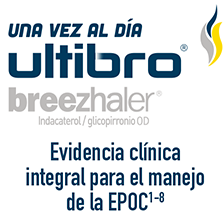
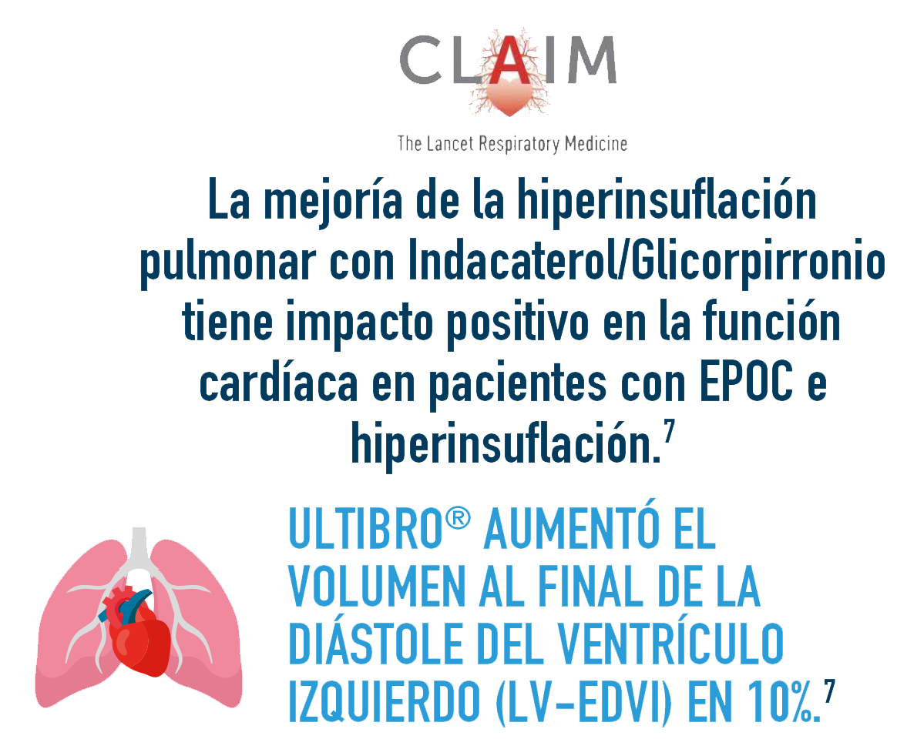
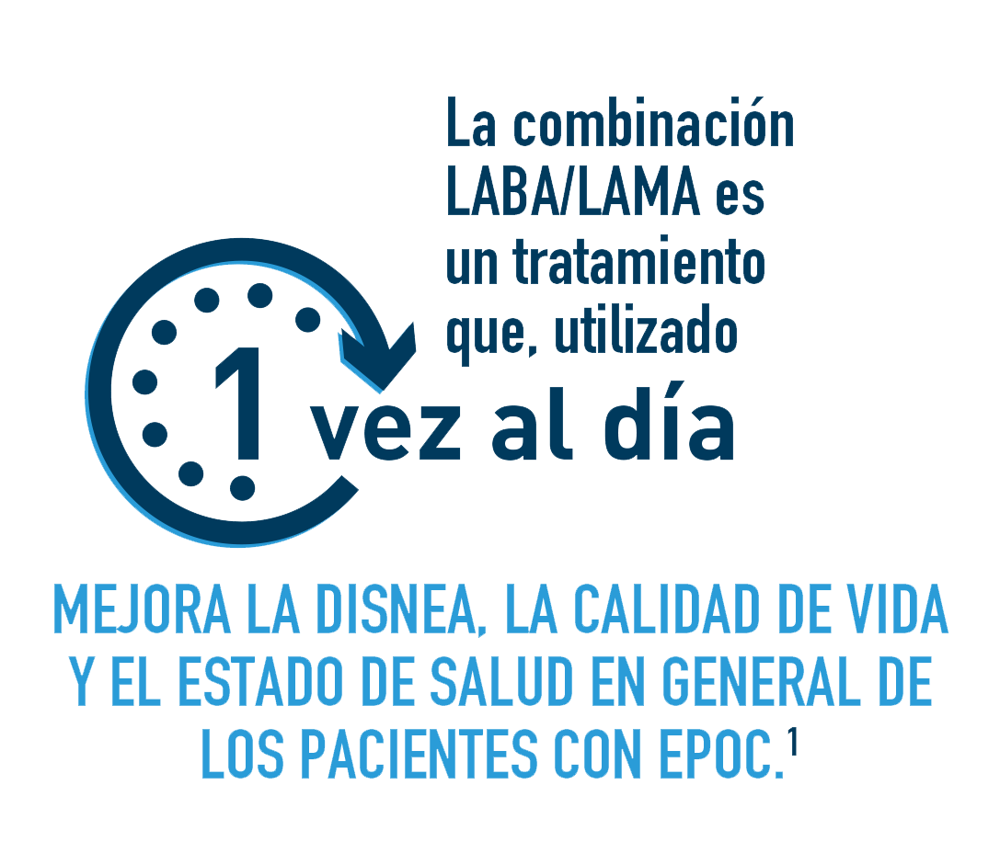

ULTIBRO ® el producto con evidencia integral
para el tratamiento de la EPOC

para el tratamiento de la EPOC





LABA: Agonista β2 adrenérgico de acción prolongada
LAMA: Agonista de los receptores muscarínicos de acción prolongada
ICS: Corticosteroides inhalados
pMDI: Inhalador presurizado de dosis medida
LAMA: Agonista de los receptores muscarínicos de acción prolongada
ICS: Corticosteroides inhalados
pMDI: Inhalador presurizado de dosis medida
Referencias:
1. Frampton JE. QVA 149 IND/GLY (indacaterol/glycopyrronium fixed-dose combination): a review of its use in patients with chronic obstructive pulmonary disease. Drugs. 2014 Mar;74(4):465-88.
2. Vogelmeier C, Aalamian-Mattheis M, Greulich T, et al S35 Efficacy and safety of the direct switch from various previous treatments to glycopyrronium or indacaterol/glycopyrronium in patients with moderate copd: the crystal study Thorax 2016;71:A22. (1):140.
3. Vogelmeier C, Gaga M, Aalamian-Mattheiset M, Greulichal T, Marin J, Castellani W. et al. Efficacy and safety of direct switch to Indacaterol/ glycopyrronium in patients with moderate COPD: the CRYSTAL open-label randomised trial. Respir Res. 2017 Jul;18:140.
4. Wedzicha JA, Banerji D, Chapman KR, Vestbo J, Roche N, Ayers RT. et al. Indacaterol-Glycopyrronium versus Salmeterol-Fluticasone for COPD. N Engl J Med. 2016 Jun;374(23):2222-34.
5. Chan M-C., Tan EC-H & Yang M-C. Cost-effectiveness analysis of a fixed-dose combination of indacaterol and glycopyrronium as maintenance treatment for COPD. International Journal of Chronic Obstructive Pulmonary Disease. 2018;13: 1079-1088.
6. Molimard M, Raherison C, Lignot S, Balestra A, Lamarque S, Chartier A, et al. Chronic obstructive pulmonary disease exacerbation and inhaler device handling: real-life assessment of 2935 patients. Eur Respir J. 2017;49(2).
7. Global Initiative for Chronic Obstructive Lung Disease (GOLD). Pocket guide to COPD diagnosis, management, and prevention a guide for health care professionals. 2019 report.
8. Anzueto AR, Vogelmeier CF, Kostikas K, Mezzi K, Fucile S, Bader G. et al.. The effect of indacaterol/glycopyrronium versus tiotropium or salmeterol/fluticasone on the prevention of clinically important deterioration in COPD. International journal of chronic obstructive pulmonary disease. 2017 May;12:1325-1337.
1. Frampton JE. QVA 149 IND/GLY (indacaterol/glycopyrronium fixed-dose combination): a review of its use in patients with chronic obstructive pulmonary disease. Drugs. 2014 Mar;74(4):465-88.
2. Vogelmeier C, Aalamian-Mattheis M, Greulich T, et al S35 Efficacy and safety of the direct switch from various previous treatments to glycopyrronium or indacaterol/glycopyrronium in patients with moderate copd: the crystal study Thorax 2016;71:A22. (1):140.
3. Vogelmeier C, Gaga M, Aalamian-Mattheiset M, Greulichal T, Marin J, Castellani W. et al. Efficacy and safety of direct switch to Indacaterol/ glycopyrronium in patients with moderate COPD: the CRYSTAL open-label randomised trial. Respir Res. 2017 Jul;18:140.
4. Wedzicha JA, Banerji D, Chapman KR, Vestbo J, Roche N, Ayers RT. et al. Indacaterol-Glycopyrronium versus Salmeterol-Fluticasone for COPD. N Engl J Med. 2016 Jun;374(23):2222-34.
5. Chan M-C., Tan EC-H & Yang M-C. Cost-effectiveness analysis of a fixed-dose combination of indacaterol and glycopyrronium as maintenance treatment for COPD. International Journal of Chronic Obstructive Pulmonary Disease. 2018;13: 1079-1088.
6. Molimard M, Raherison C, Lignot S, Balestra A, Lamarque S, Chartier A, et al. Chronic obstructive pulmonary disease exacerbation and inhaler device handling: real-life assessment of 2935 patients. Eur Respir J. 2017;49(2).
7. Global Initiative for Chronic Obstructive Lung Disease (GOLD). Pocket guide to COPD diagnosis, management, and prevention a guide for health care professionals. 2019 report.
8. Anzueto AR, Vogelmeier CF, Kostikas K, Mezzi K, Fucile S, Bader G. et al.. The effect of indacaterol/glycopyrronium versus tiotropium or salmeterol/fluticasone on the prevention of clinically important deterioration in COPD. International journal of chronic obstructive pulmonary disease. 2017 May;12:1325-1337.